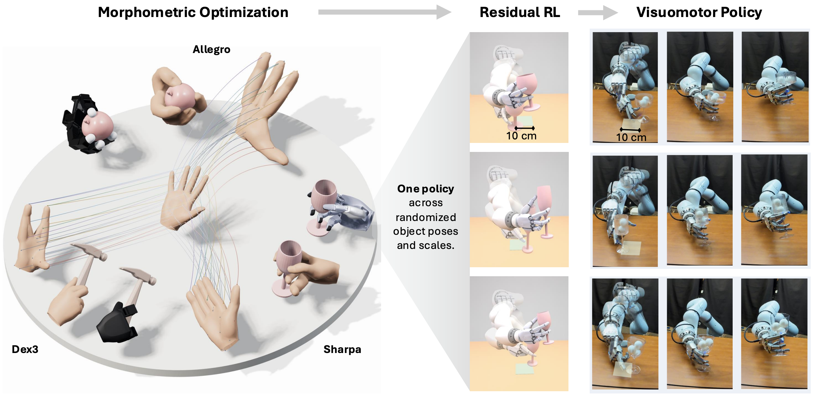

Morphometric Imitation: From Morphology and Contact Aware Hand Retargeting to Sim-to-Real Visuomotor Policy
Retargets human hand–object interactions across hand morphologies while preserving contacts, refines them with residual RL, and distills the result into zero-shot sim-to-real visuomotor policies.
How it relates
Both learn a dexterous manipulation policy from a single human video. Morphometric Imitation retargets the demonstrated motion, so its generalization is evaluated with the object’s initial position varied only within roughly a 10 cm × 10 cm region around the demonstration. Dex-One2Many abstracts the video into task relations instead of motion, so the policy generalizes to initial and goal poses far from the ones in the video.